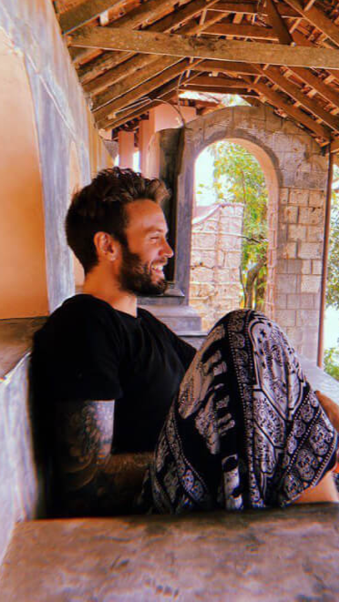
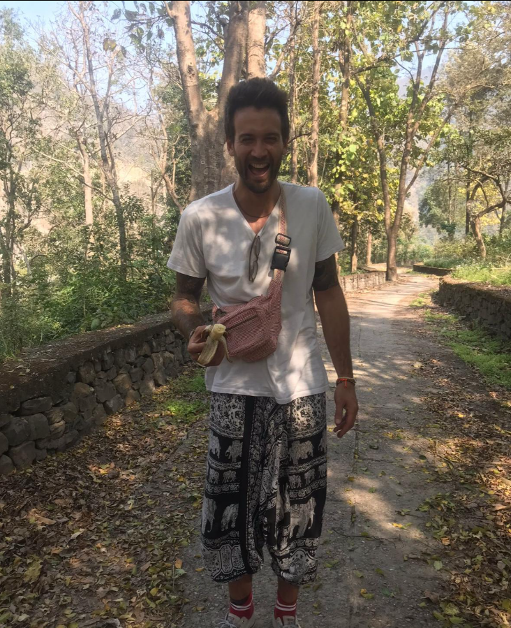

<!-- ═══════════════════════════════════════════════════════════════════════════
     SECCIÓN 7: ANTES - HISTORIA DE FAKU
     ────────────────────────────────────────────────────────────────────────────
     Descripción: Sección que muestra el "antes" de Faku con su galería de imágenes
     y su historia de transformación resumida.
═══════════════════════════════════════════════════════════════════════════ -->

<style>
  /* ══════════ ESTILOS GLOBALES ══════════ */
  :root {
    --brand: #1f7bff;
    --brand2: #3c5cff;
  }

  * {
    box-sizing: border-box;
  }

  body {
    margin: 0;
    font-family: ui-sans-serif, system-ui, -apple-system, Segoe UI, Roboto, Arial, sans-serif;
  }

  .before-section {
    padding: 80px 0;
    position: relative;
    overflow: hidden;
  }

  .before-container {
    max-width: 1200px;
    margin: 0 auto;
    padding: 0 20px;
  }

  .before-header {
    text-align: center;
    margin-bottom: 60px;
  }

  .before-title {
    font-size: clamp(32px, 5vw, 48px);
    font-weight: 900;
    letter-spacing: -0.8px;
    margin: 0 0 16px;
    color: rgba(12, 22, 40, 0.96);
    line-height: 1.1;
    position: relative;
    display: block;
    width: fit-content;
    margin-left: auto;
    margin-right: auto;
  }

  .before-title::after {
    content: '';
    position: absolute;
    bottom: -8px;
    left: 50%;
    transform: translateX(-50%);
    width: 180px;
    height: 3px;
    background: linear-gradient(90deg, transparent, rgba(12, 22, 40, 0.2), transparent);
    border-radius: 2px;
  }

  .before-subtitle {
    font-size: 17px;
    color: rgba(12, 22, 40, 0.72);
    max-width: 680px;
    margin: 0 auto 30px;
    line-height: 1.7;
  }

  .before-content {
    display: grid;
    grid-template-columns: 1fr 1fr;
    gap: 40px;
    align-items: center;
  }

  .before-image-wrapper {
    position: relative;
    height: 100%;
    min-height: 600px;
    display: flex;
    flex-direction: row-reverse;
    gap: 12px;
    align-items: stretch;
  }

  .gallery-item-horizontal {
    position: relative;
    border-radius: 16px;
    overflow: hidden;
    cursor: pointer;
    transition: all 0.6s cubic-bezier(0.25, 0.46, 0.45, 0.94);
    background: rgba(255, 255, 255, 0.9);
    border: 1px solid rgba(12, 22, 40, 0.1);
    box-shadow: none !important;
    flex: 0 0 80px;
  }

  .gallery-item-horizontal img {
    width: 100%;
    height: 100%;
    object-fit: cover;
    display: block;
    transition: all 0.6s cubic-bezier(0.25, 0.46, 0.45, 0.94);
  }

  .gallery-item-horizontal.active,
  .gallery-item-horizontal:hover {
    flex: 1 1 500px;
    z-index: 10;
    box-shadow: none !important;
    border-color: rgba(12, 22, 40, 0.2);
    transform: scale(1.02) translateY(-4px);
  }

  .gallery-item-horizontal.active img,
  .gallery-item-horizontal:hover img {
    transform: scale(1.05);
  }

  .gallery-item-horizontal::before {
    content: '';
    position: absolute;
    inset: 0;
    background: transparent;
    opacity: 0;
    transition: opacity 0.6s cubic-bezier(0.25, 0.46, 0.45, 0.94);
    z-index: 1;
    pointer-events: none;
  }

  .gallery-item-horizontal.active::before,
  .gallery-item-horizontal:hover::before {
    opacity: 0;
  }

  .before-story {
    padding: 20px 0;
  }

  .story-timeline {
    display: flex;
    flex-direction: column;
    gap: 32px;
  }

  .timeline-item {
    position: relative;
    padding-left: 32px;
  }

  .timeline-item::before {
    content: '';
    position: absolute;
    left: 0;
    top: 8px;
    width: 12px;
    height: 12px;
    border-radius: 50%;
    background: linear-gradient(135deg, #1f7bff, #3c5cff);
    box-shadow: 0 0 0 4px rgba(31, 123, 255, 0.15);
  }

  .timeline-item::after {
    content: '';
    position: absolute;
    left: 5px;
    top: 20px;
    width: 2px;
    height: calc(100% + 16px);
    background: linear-gradient(180deg, rgba(31, 123, 255, 0.3), transparent);
  }

  .timeline-item:last-child::after {
    display: none;
  }

  .timeline-year {
    font-size: 14px;
    font-weight: 700;
    color: rgba(31, 123, 255, 0.9);
    letter-spacing: 0.5px;
    margin-bottom: 8px;
    text-transform: uppercase;
  }

  .timeline-content {
    color: rgba(12, 22, 40, 0.86);
    line-height: 1.7;
    font-size: 15px;
  }

  .timeline-content strong {
    color: rgba(12, 22, 40, 0.96);
    font-weight: 700;
  }

  /* ══════════ RESPONSIVE ══════════ */
  @media (max-width: 900px) {
    .before-section {
      padding: 60px 0;
    }
    .before-content {
      grid-template-columns: 1fr;
      gap: 40px;
    }
    .before-image-wrapper {
      min-height: 400px;
      order: 1;
    }
    .gallery-item-horizontal {
      flex: 0 0 60px;
    }
    .gallery-item-horizontal:hover {
      flex: 1 1 350px;
    }
    .before-story {
      order: 2;
    }
  }

  @media (max-width: 600px) {
    .before-section {
      padding: 50px 0;
    }
    .before-header {
      margin-bottom: 40px;
    }
    .before-image-wrapper {
      min-height: 300px;
      gap: 8px;
    }
    .gallery-item-horizontal {
      flex: 0 0 50px;
      border-radius: 12px;
    }
    .gallery-item-horizontal:hover {
      flex: 1 1 250px;
    }
    .story-timeline {
      gap: 24px;
    }
    .timeline-content {
      font-size: 14px;
    }
  }

  @media (prefers-reduced-motion: reduce) {
    .gallery-item-horizontal,
    .gallery-item-horizontal img,
    .gallery-item-horizontal::before {
      transition: none;
    }
  }
</style>

<section id="antes" aria-label="Sección antes" class="before-section">
  <div class="before-container">
    <div class="before-header">
      <h2 class="before-title">¿Quién era antes?</h2>
      <p class="before-subtitle">
        Una mirada honesta al camino recorrido. No para juzgar: para entender 
        desde dónde empezamos y hacia dónde podemos llegar.
      </p>
    </div>

    <div class="before-content">
      <!-- COLUMNA IZQUIERDA: GALERÍA HORIZONTAL -->
      <div class="before-image-wrapper" id="gallery-wrapper">
        <div class="gallery-item-horizontal" data-gallery-item="0">
          
        </div>
        <div class="gallery-item-horizontal" data-gallery-item="1">
          
        </div>
        <div class="gallery-item-horizontal" data-gallery-item="2">
          
        </div>
        <div class="gallery-item-horizontal" data-gallery-item="3">
          
        </div>
      </div>

      <!-- COLUMNA DERECHA: HISTORIA -->
      <div class="before-story">
        <div class="story-timeline">
          
          <div class="timeline-item">
            <div class="timeline-year">2008 - 2021</div>
            <div class="timeline-content">
              Jugué básquet profesional en Argentina, Suecia y Chile. Los partidos se transmitían por televisión nacional. <strong>Por fuera todo era perfecto, pero por dentro me sentía vacío.</strong> Tenía auto, podía viajar, comer donde quisiera, pero no era feliz. "Tiene que haber algo más", me decía.
            </div>
          </div>

          <div class="timeline-item">
            <div class="timeline-year">2020 - Pandemia</div>
            <div class="timeline-content">
              <strong>El momento bisagra:</strong> abrí mi corazón, me hice responsable de mis traumas. Empecé mi proceso de desarrollo personal y autoconocimiento. Crisis existencial. "¿Y ahora quién soy?" Me había identificado tanto con ser jugador que ese personaje ya no tenía lugar. Jugué un año y medio más, y renuncié.
            </div>
          </div>

          <div class="timeline-item">
            <div class="timeline-year">2022</div>
            <div class="timeline-content">
              <strong>Vendí todo y con vértigo terrible, me fui a India con ticket de ida.</strong> Seis meses viajando, haciendo yoga, meditación. Fue otro antes y después. Mi deseo de ayudar a las personas empezó a despertar.
            </div>
          </div>

          <div class="timeline-item">
            <div class="timeline-year">2022 - Junio</div>
            <div class="timeline-content">
              Me mudé a Tenerife. Fui camarero, fotógrafo en barcos, hice voluntariados. <strong>Hace ocho meses, tomé la mejor decisión de mi vida:</strong> dejar el azúcar refinado y todas las drogas, y empezar a levantarme a las 5 am todos los días sin fallar. Empecé a documentar absolutamente todo mi día.
            </div>
          </div>

          <div class="timeline-item">
            <div class="timeline-year">2025</div>
            <div class="timeline-content">
              En enero me hackearon la cuenta bancaria y me quedé con 70 euros. <strong>El 11 de enero, empecé a dar mis primeras mentorías 1:1</strong> y creé la sala de amor propio. Mi vida se transformó completamente. Hoy tengo más de 230.000 personas en Instagram. Mi intuición tenía razón: había algo más, y ese algo más es poder ayudar a otros a transformar su vida como yo lo hice conmigo.
            </div>
          </div>

        </div>
      </div>
    </div>
  </div>
</section>

<script>
  // ═══════════════════════════════════════════════════════════════════════════
  // GALERÍA AUTOMÁTICA - Animación secuencial de imágenes
  // ═══════════════════════════════════════════════════════════════════════════
  (function() {
    const galleryWrapper = document.getElementById('gallery-wrapper');
    if (!galleryWrapper) return;

    const items = galleryWrapper.querySelectorAll('.gallery-item-horizontal');
    if (items.length === 0) return;

    let currentIndex = 0;
    let autoPlayInterval = null;
    let isPaused = false;
    const AUTO_PLAY_DURATION = 3000; // 3 segundos por imagen

    // Función para activar una imagen específica
    function activateImage(index) {
      items.forEach((item, i) => {
        if (i === index) {
          item.classList.add('active');
        } else {
          item.classList.remove('active');
        }
      });
    }

    // Función para avanzar a la siguiente imagen
    function nextImage() {
      currentIndex = (currentIndex + 1) % items.length;
      activateImage(currentIndex);
    }

    // Iniciar la animación automática
    function startAutoPlay() {
      if (autoPlayInterval) return;
      
      // Activar la primera imagen
      activateImage(currentIndex);
      
      autoPlayInterval = setInterval(() => {
        if (!isPaused) {
          nextImage();
        }
      }, AUTO_PLAY_DURATION);
    }

    // Pausar la animación automática
    function pauseAutoPlay() {
      isPaused = true;
    }

    // Reanudar la animación automática
    function resumeAutoPlay() {
      isPaused = false;
    }

    // Detener la animación automática
    function stopAutoPlay() {
      if (autoPlayInterval) {
        clearInterval(autoPlayInterval);
        autoPlayInterval = null;
      }
    }

    // Event listeners para cada imagen
    items.forEach((item, index) => {
      // Cuando el mouse entra, pausar y activar esta imagen
      item.addEventListener('mouseenter', () => {
        pauseAutoPlay();
        activateImage(index);
        currentIndex = index;
      });

      // Cuando el mouse sale, reanudar la animación
      item.addEventListener('mouseleave', () => {
        resumeAutoPlay();
      });
    });

    // Pausar cuando el mouse está sobre el contenedor completo
    galleryWrapper.addEventListener('mouseenter', pauseAutoPlay);
    galleryWrapper.addEventListener('mouseleave', resumeAutoPlay);

    // Iniciar la animación cuando la página carga
    if (document.readyState === 'loading') {
      document.addEventListener('DOMContentLoaded', startAutoPlay);
    } else {
      startAutoPlay();
    }

    // Limpiar cuando la página se oculta (para ahorrar recursos)
    document.addEventListener('visibilitychange', () => {
      if (document.hidden) {
        stopAutoPlay();
      } else {
        startAutoPlay();
      }
    });
  })();
</script>

